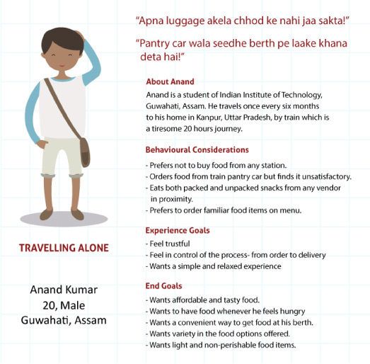
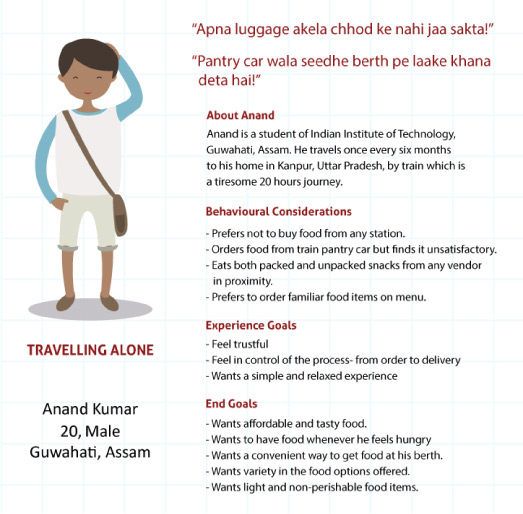

"Won Silver Medal at UXplorer 17"
Ensuring on-time deliveries
Indian Railways has recently come under intense criticism for large run time delays of trains, which often disrupts passengers' meal timings. How might we then improve the online catering experience of travellers?
This project was done as a part of the UXplorer 2017, a national-level student design challenge, during July-August 2017.


 
